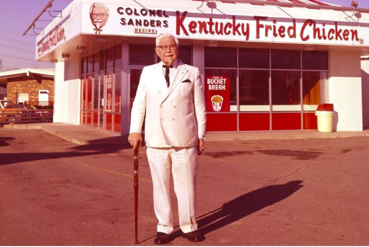

In ancient times, a king had his men place a boulder on a roadway. He then hid in the bushes, and watched to see if anyone would move the boulder out of the way. Some of the king wealthiest merchants and courtiers passed by and simply walked around it.
Many people blamed the King for not keeping the roads clear, but none of them did anything about getting the stone removed.
One day, a peasant came along carrying vegetables. Upon approaching the boulder, the peasant laid down his burden and tried to push the stone out of the way. After much pushing and straining, he finally managed.
After the peasant went back to pick up his vegetables, he noticed a purse lying in the road where the boulder had been. The purse contained many gold coins and note from the King explain that the gold was for the person who removed the boulder from the road.
Moral of the story: Every obstacle that we come across gives us an opportunity to improve our circumstances, and while the lazy complain, others are creating opportunities through their kind hearts, generosity, and willingness to get things done.
A group of frogs were traveling through the forest when two of them fell into a deep pit. When the other frogs saw how deep the pit was, they told the two frogs that there was no hope left for them.
However, the two frogs ignored their comrades and proceeded to try to jump out of the pit. However, despite their efforts, the group of frogs at the top of the pit were still saying that they should just give up as they did never make it out.
Eventually, one of the frogs took heed of what the others were saying and he gave up, jumping even deeper to his death. The other frog continued to jump as hard as he could. Once again, the group of frogs yelled at him to stop the pain and to just die.
He ignored them, and jumped even harder and finally made it out. When he got out, the other frogs said, Did you not hear us?
The frog explained to them that he was deaf, and that he thought they were encouraging him the entire time.
Moral of the story: Peoples words can have a huge effect on the lives of others. Therefore, you should think about what you are going to say before it comes out of your mouth it might just be the difference between life and death.
A man favorite donkey falls into a deep precipice. He can not pull it out no matter how hard he tries. He therefore decides to bury it alive. Soil is poured onto the donkey from above. The donkey feels the load, shakes it off, and steps on it. More soil is poured. It shakes it off and steps up. The more the load was poured, the higher it rose. By noon, the donkey was grazing in green pastures. After much shaking off (of problems) And stepping up (learning from them), One will graze in GREEN PASTURES.
A 24 year old boy seeing out from the train window shouted
Dad, look the trees are going behind!
Dad smiled and a young couple sitting nearby, looked at the 24 year old childish behavior with pity, suddenly he again exclaimed
Dad, look the clouds are running with us!
The couple could not resist and said to the old man
Why do not you take your son to a good doctor? The old man smiled and said, I did and we are just coming from the hospital, my son was blind from birth, he just got his eyes today.
Every single person on the planet has a story. Do not judge people before you truly know them. The truth might surprise you.
As a man was passing the elephants, he suddenly stopped, confused by the fact that these huge creatures were being held by only a small rope tied to their front leg. No chains, no cages. It was obvious that the elephants could, at anytime, break away from their bonds but for some reason, they did not. He saw a trainer nearby and asked why these animals just stood there and made no attempt to get away. Well, trainer said, when they are very young and much smaller we use the same size rope to tie them and, at that age, it is enough to hold them. As they grow up, they are conditioned to believe they cannot break away. They believe the rope can still hold them, so they never try to break free. The man was amazed. These animals could at any time break free from their bonds but because they believed they could not, they were stuck right where they were. Like the elephants, how many of us go through life hanging onto a belief that we cannot do something, simply because we failed at it once before? Failure is part of learning; we should never give up the struggle in life.
 Once, there was an older man, who was broke, living in a tiny house and owned a beat up car. He was living off of $99 social security checks. At 65 years of age, he decide things had to change. So he thought about what he had to offer. His friends raved about his chicken recipe. He decided that this was his best shot at making a change. He left Kentucky and traveled to different states to try to sell his recipe. He told restaurant owners that he had a mouthwatering chicken recipe. He offered the recipe to them for free, just asking for a small percentage on the items sold. Sounds like a good deal, right? Unfortunately, not to most of the restaurants. He heard NO over 1000 times. Even after all of those rejections, he did not give up. He believed his chicken recipe was something special. He got rejected 1009 times before he heard his first yes. With that one success Colonel Hartland Sanders changed the way Americans eat chicken. Kentucky Fried Chicken, popularly known as KFC, was born. Remember, never give up and always believe in yourself in spite of rejection.
Imagine you had a bank account that deposited $86,400 each morning. The account carries over no balance from day to day, allows you to keep no cash balance, and every evening cancels whatever part of the amount you had failed to use during the day. What would you do? Draw out every dollar each day! We all have such a bank. Its name is Time. Every morning, it credits you with 86,400 seconds. Every night it writes off, as lost, whatever time you have failed to use wisely. It carries over no balance from day to day. It allows no overdraft so you can not borrow against yourself or use more time than you have. Each day, the account starts fresh. Each night, it destroys an unused time. If you fail to use the days deposits, it is your loss and you can not appeal to get it back. There is never any borrowing time. You can not take a loan out on your time or against someone else. The time you have is the time you have and that is that. Time management is yours to decide how you spend the time, just as with money you decide how you spend the money. It is never the case of us not having enough time to do things, but the case of whether we want to do them and where they fall in our priorities.
FOR MOTIVATIONAL QUOTES click here